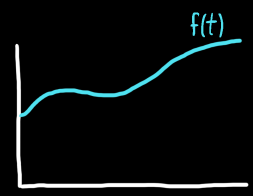
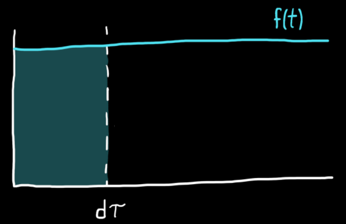
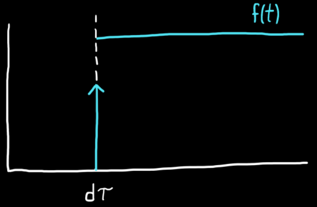
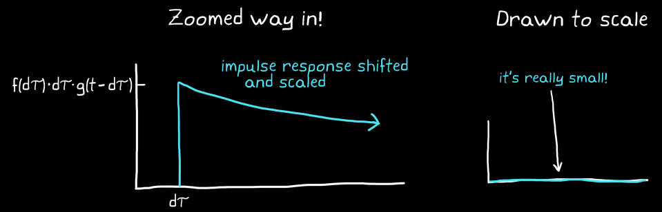
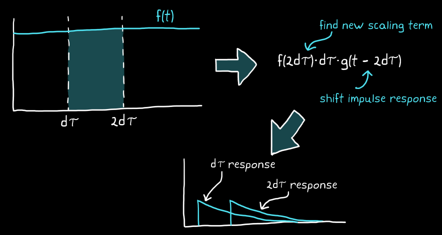
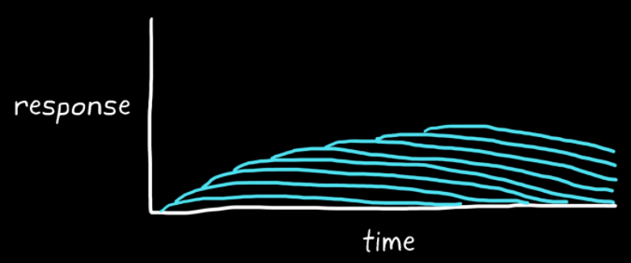

Consider the first infinitesimally thin slice $d\tau$ of a continuous function $f(t)$. The area under the curve for the slice can be approximated as the height of the function times the width of the slice:
$$
f(d\tau) \cdot d\tau
$$
The area is an approximation since $f(d\tau)$ is assumed to be a constant for the entire slice of $d\tau$. If the limit as $d\tau \rightarrow 0$ is taken, then the area under the particular instant of the curve, would no longer be an approximation. Summing all the area slices gives the area under the entire curve.


Area under a thin slice of the curve from $t=0$ to $t=d\tau$
Alternate representation for the area of a slice
A slice can be replaced with a single scaled impulse function. Since an impulse function has an area of 1, multiplying it by the area of a slice essentially scales the impulse function to have a similar area.
$$
\underbrace{f(d\tau) \cdot d\tau}_{\scriptsize\text{Area scaling term}}
\cdot
\underbrace{\delta(t-d\tau)}_{\scriptsize\text{Shifted impulse function}}
$$

A slice of a continuous function can be replaced by a scaled impulse function
Impulse response to a single sliced input
If a system can be assumed to be LTI and a continuous function to be an input to it, then the system response is predictable. The response would be the sum of impulse responses:
Time-shifted by the same amount as the input impulse function
Scaled by the same amount $f(d\tau) \cdot d\tau$ as the input function
The system's impulse response after $d\tau$ time would be:
$$
\underbrace{f(d\tau) \cdot d\tau}_{\scriptsize\text{Area scaling factor}}
\cdot
\underbrace{g(t-d\tau)}_{\scriptsize\text{Shifted impulse response}}
$$

If $d\tau$ is extremely small, then the impulse response will be scaled way down and its impact wouldn't be noticeable
Impulse response to multiple input slices
If at each time interval $d\tau$, the input is replaced with a scaled impulse function, then the system would produce scaled impulse responses that are shifted in time to correspond to when the impulse functions occurred.

The system's output consists of:
Shifted individual impulse responses
Individual impulse responses scaled down to nothing
Layers of infinitesimally small responses that are summed together

The response to input $f(t)$ becomes the summation of an infinite number of tiny impulse responses
The system response would be the superposition of all impulse responses. Digitally, this is done as an operation called Discrete convolution:
$$
\sum^{\infty}_{i=0}
\underbrace{f(i\cdot d\tau) \cdot d\tau}_{\scriptsize\text{Area scaling factor}}
\cdot
\underbrace{g(t - i \cdot d\tau)}_{\scriptsize\text{Shifted impulse response}}
$$
This approximation would be exact if the limit as $d\tau \rightarrow 0$ is taken in an operation called Continuous Convolution:
$$
\int^{\infty}_0 f(\tau)g(t-\tau)d\tau
$$